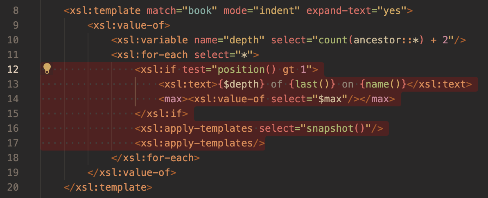
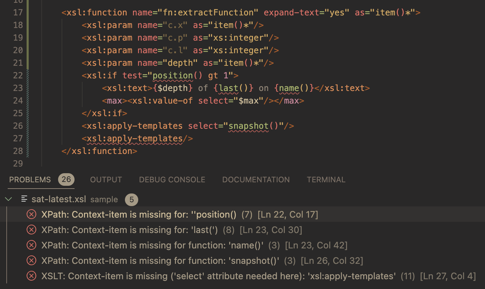
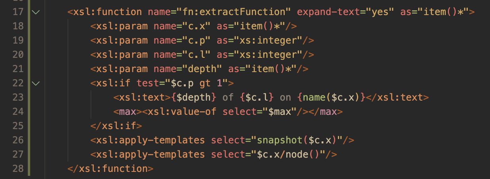

Refactoring: Extract to xsl:function
The Refactoring section of the Editing XSLT/XPath part of this guide describes XSLT refactoring in general. This section provides additional detail on the 'extract to xsl:function refactor..
Introduction
There are two available modes for extracting selected code to an xsl:function: full and partial. In this refactor, required context properties must be passed as parameters when the new xsl:function is invoked, this is because context properties are cleared inside an xsl:function.
Parial Mode
In the partial mode, required parameters are passed to the new function, but code in not refactored to reference the new parameters. Instead, the 'missing-context' properties are highlighted as problems.
Full Mode
The full refactor fixes 'missing-context' properties by refactoring the code to reference the relevant parameters.
A Sample Refactor
The screenshots below show sample code refactored to extracte to an xsl:function.



Known Restrictions
The code selected for a refactor is important. For example, in many cases it may be more effective to extract an entire xsl:merge instruction instead of a set of instructions within the child xsl:merge-action instruction.
There are known limitations in what can be acheived when passing context to an xsl:function, these are outlined below. Please note also that in general there will be cases where, because of context, it would be advisable to extract to xsl:template instead of xsl:function.
- Potential ‘missing context’ problems for the xsl:call-template instruction are highlighted but not fixed. In such cases, it’s advisable to undo the refactor and use the extract to xsl:template refactoring instead.
-
The regex-group($n) expression (where $n is not a literal integer) with ‘missing context’ is a special refactoring case.
It is resolved to
$r.group($n)where$r.groupreferences a context xsl:param of typemap(xs:integer, xs:string), The number of items in the generated code for$r.groupis set to99this number should be corrected manually to the expected number of regex groups given the regex used.
Context Properties
The table below summarises lists the context properties, along with the corresponding xsl:function parameter names that will, if required, be created for an xsl:function refactor.
| Context property | Parameter |
|---|---|
| current() or '.' | c.x |
| position() | c.p |
| last() | c.l |
| current-group() | g.current |
| current-grouping-key() | g.key |
| regex-group($n) | r.group($n) |
| current-merge-group() | m.current |
| current-merge-key() | m.key |
| current-merge-group() | g.current |
| current-merge-group($name) | g.groups($name) |